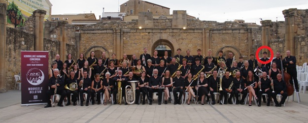

Volledige naam:
Rune Decouttere
Rune Decouttere
Sint-Janstraat 12
8560 Moorsele
056 41 33 65
rune.decouttere@student.vives.be

Drummen in verschillende orkesten:
| Vak | Mijn prognose | Prognose student 1: Nathan | Prognose student 2: Arthur | Prognose student 3: Cayden |
|---|---|---|---|---|
| Problem Solving | 14/20 | 15/20 | 16/20 | 15/20 |
| Computer Systems | 17/20 | 16/20 | 17/20 | 16/20 |
| Fundamentals of Programming | 13/20 | 15/20 | 16/20 | 14/20 |